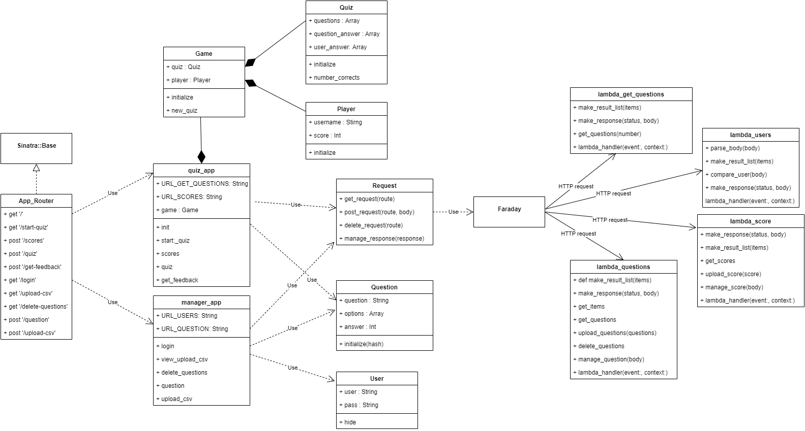
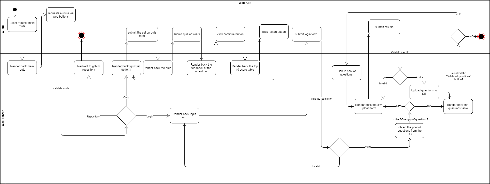
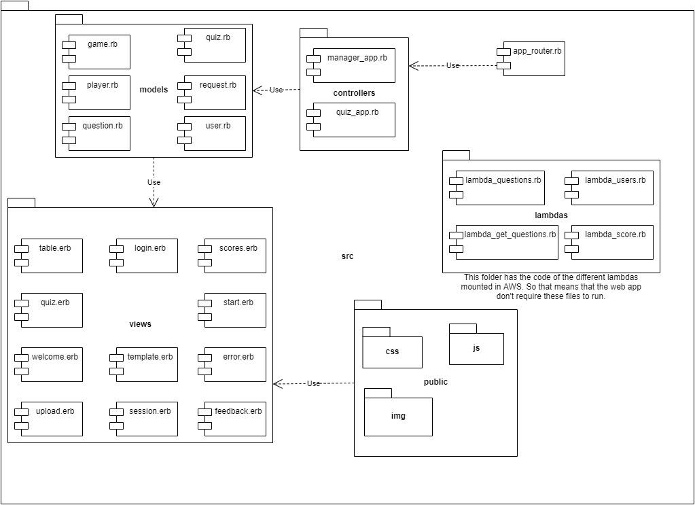
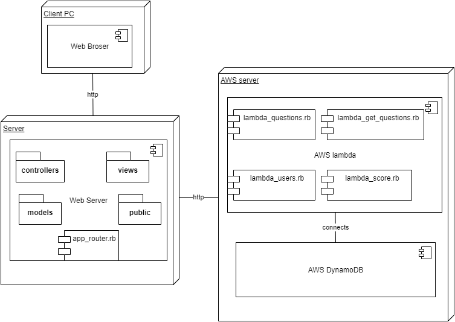
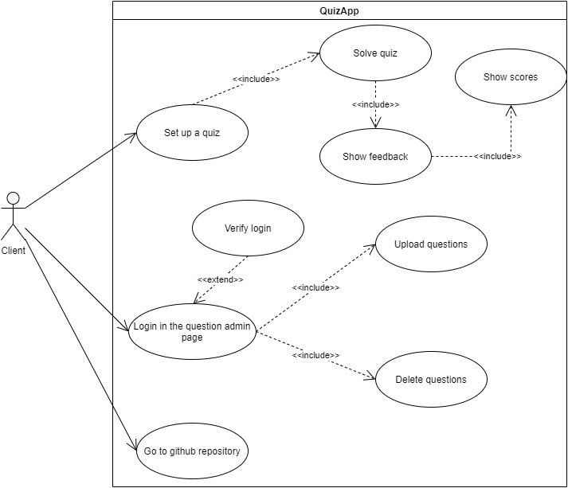

General overview¶ ↑
This is a web app to manage and take quizzes and it's written in ruby code.
Inside the app you can upload a csv files to fill the pool of questions, but this file need to be formatted in the same way as the file named sample_40_questions.csv that appears at the root of this repository.
Once you have uploaded the questions you can generate a new quiz, submitting a nickname and the number of questions that you want.
Authors¶ ↑
-
A01377154 Felipe Osornio
-
A01378838 Eric Gómez
-
A01378916 Rafael Moreno Cañas
Installing and Running the Application¶ ↑
To run the web application, download this repository and then inside the src folder type the following instruction at the command line:
$ ruby app_router.rb
4+1 architectural view model¶ ↑
Logical view¶ ↑

Process view¶ ↑

Development view¶ ↑

Physical view¶ ↑

Scenarios (Use case view)¶ ↑

Patterns used¶ ↑
-
Model-View-Controller : The application follows the classical web implementation of the MVC architectural pattern. The models (
.rbfiles) and views (.erbfiles) are stored in the corresponding models and views directory. The controllers are the (.rbfiles) inside of controllers directory and theapp_router.rb -
Adapter : The model
game.rbis an adapter to use theplayer.rbandquiz.rbinside the controllerquiz_app.rb. -
Domain-Specific Language : The
app_router.rbfile consists of a series of Sinatra routes. Sinatra is a DSL for creating web applications in Ruby. -
Command : The controllers
quiz_app.rbandmanger_app.rbcontain the concrete commands to each route declared in theapp_router.rb, so in this way all the web routes invoke the corresponding command to do a concrete action.
References¶ ↑
-
R. Olsen. Design Patterns in Ruby. Addison-Wesley, 2007.